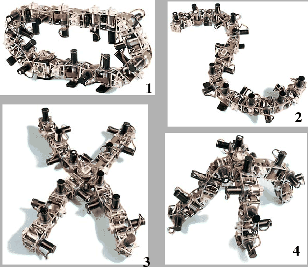

Estos son los primeros módulos que son autoreconfigurables, capaces
de unirse y soltarse. Al igual que en polybot, hay dos tipos de módulos:
nodos y segmentos. Tienen un tamaño de 11x7x6 cmm y utilizan un motor
de corriente contínua sin escobillas en lugar de un servomecanismos
como en los anteriores (ver figura ![[*]](crossref.png) ). El
rango de giro es de -90 a 90 grados. La estructura es metálica, mucho
más robusta.
). El
rango de giro es de -90 a 90 grados. La estructura es metálica, mucho
más robusta.
Dispone de dos placas de conexión iguales, en caras opuestas para la conexión de unos módulos con otros. Por los conectores metálicos va la alimentación y las comunicaciones. La conexión se puede realizar en fase o desfasada y es del tipo ``enganchar y listo'', no hay que atornillar nada. El propio robot puede enganchar y desenganchar los módulos.
Cada módulo dispone de un PowerPc 555 de motorola mas 1MB de RAM, lo que le confiere una gran capacidad de cálculo. No se está utilizando toda esta capacidad, pero se reserva para futuros experimentos.
Todos los módulos se comunican a través del BUS CAN, lo que permite que el sistema sea más distribuido y más fiable.
Se han realizado experimentos en el campo de la locomoción, configurando
el robot como un gusano, una araña y desplazándose tipo rueda. Pero
el experimento más interesante es el de la configuración dinámica[35],
en el que Polybot, desplazándose inicialmente como una rueda de 12
módulos , se convierte en un gusano, moviéndose mediante ondas sinusoidales
y finalmente se transforma en una araña, en dos fases. Primero la
cabeza y la cola del gusano se enganchan al módulo central (que es
un nodo) adquierindo una forma de ``8''. Dos pares de módulos
opuestos se sultan, tomando una forma de ``X''. Las patas se apoyan
en el suelo y el bicho se levanta (ver figura ).
|
 |